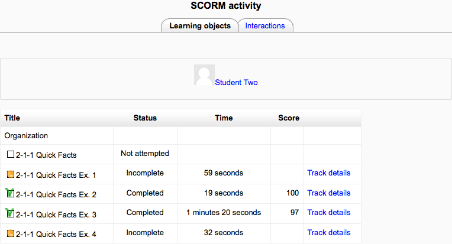
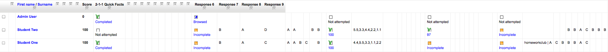

Like a Moodle course, each SCORM package will vary with the modules used in its construction by the teacher and by the SCORM activity settings established by the teacher.
- Preview and review mode options
- Checkboxes to indicate whether sections have been accessed previously
- Start new attempt
- Reset
A teacher can access 3 report types for the SCORM activity via the reports tab:
- Basic report
- Graph report
- Interactions report
The basic report page shows a table of attempts for the SCORM activity. If you have the SCORM activity set up to allow multiple attempts, there may be more than one attempt for some users.
Selected attempts may be deleted by ticking the checkboxes then clicking the ‘Delete selected attempts’ button.
The basic report may be downloaded in ODS, Excel or text format.
A detailed report of each user’s attempts may be obtained by clicking on the number in the attempts column. The track details link provides information on specific SCORM values recorded in Moodle by the SCORM object.
Note that the tracked details depend heavily upon what the SCORM object itself is programmed to report. Many SCORM packages created with authoring suites use the suspend_data field to record important information, instead of the traditional SCORM values. This makes deciphering the recorded data extremely difficult.
The graph report displays graphs of percentage obtained against number of participants.
The interactions report shows students’ responses to questions together with the correct answers.
